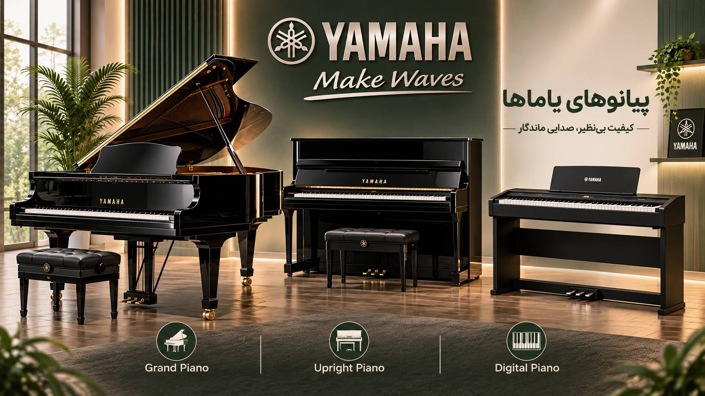
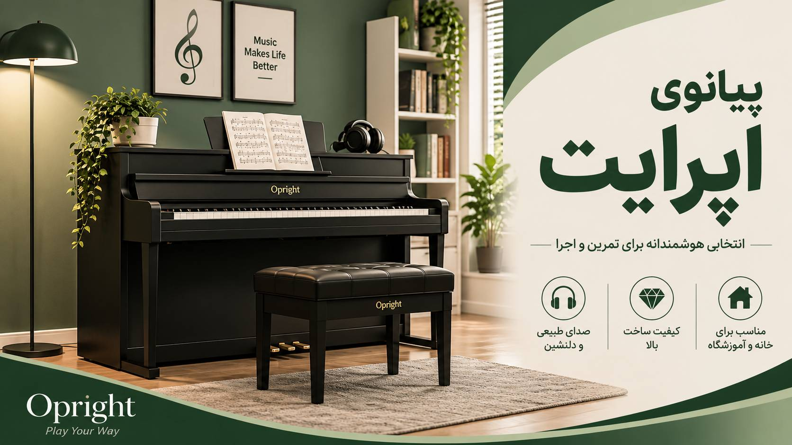
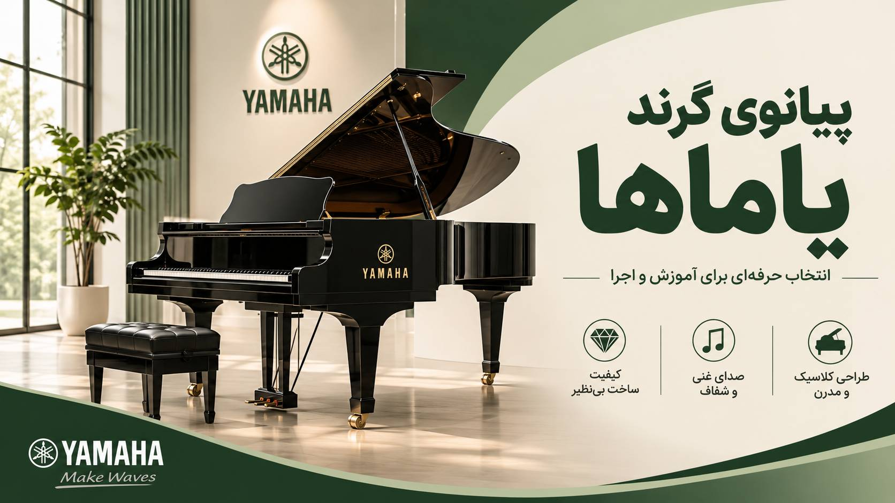
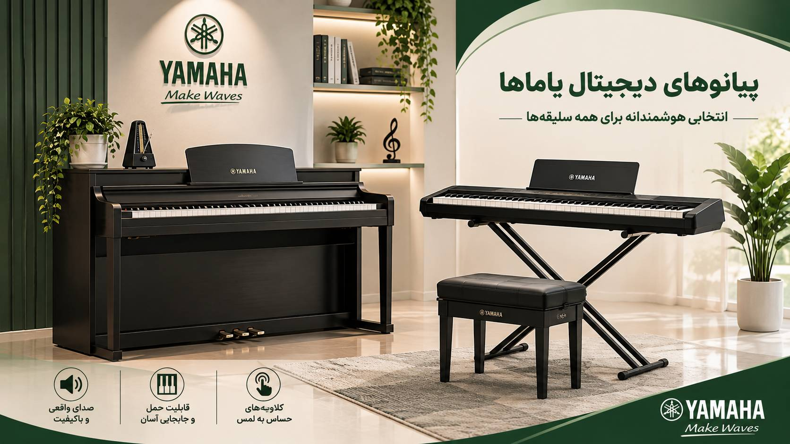
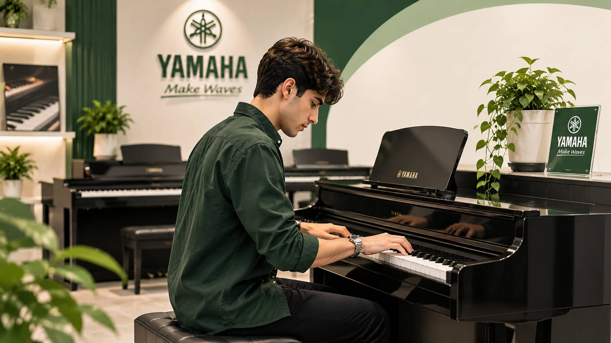

اگر برای خرید پیانو جستوجو کرده باشید، احتمالاً نام یاماها را در مدلهای مختلف دیدهاید؛ از پیانوهای بزرگ گرند در سالنهای اجرا تا مدلهای دیجیتال جمعوجوری که در خانه تمرین میشوند. همین تنوع ممکن است انتخاب را دشوار کند. آیا پیانوی آکوستیک برای شما مناسبتر است؟ آیا یک مدل دیجیتال با هدفون و تنظیم صدا نیازتان را برطرف میکند؟ و تفاوت سریهایی مثل Clavinova و Arius چیست؟
برای پاسخ، بهتر است ابتدا پیانوها را بر اساس ساختار و شیوه تولید صدا بشناسیم. یاماها خانوادههای متنوعی دارد که در دستههای آکوستیک، دیجیتال و هیبریدی قرار میگیرند؛ در نتیجه انتخاب تنها به مقایسه دو نوع «آکوستیک یا دیجیتال» محدود نیست.
در این راهنما از دستهبندی کلی شروع میکنیم، بعد تفاوت سریها را توضیح میدهیم و در پایان مسیر انتخاب را بر اساس بودجه، فضا و هدف نوازندگی بررسی میکنیم.

۱. پیانوهای یاماها از نظر ساختار چه انواعی دارند؟
در قدم اول، باید تفاوت میان خود سازها را بشناسیم. پیانوی آکوستیک با برخورد چکشها به سیم، صدا تولید میکند؛ پیانوی دیجیتال صدا را بهصورت الکترونیکی بازسازی میکند؛ و پیانوی هیبریدی بخشی از تجربه مکانیکی یا بدنه پیانوی آکوستیک را با فناوری دیجیتال ترکیب میکند.
یاماها علاوه بر مدلهای گرند و آپرایت آکوستیک، خانوادههایی مانند Clavinova، Arius، P Series، AvantGrand، SILENT Piano و TransAcoustic را هم عرضه میکند. همه این محصولات برای یک نفر یا یک موقعیت ساخته نشدهاند. کسی که تمرین با هدفون را میخواهد، نیاز متفاوتی با نوازندهای دارد که صدای آکوستیک و واکنش مکانیکی ساز برایش در اولویت است.
پس پیش از بررسی نام مدلها، سه سؤال را در نظر بگیرید: آیا میخواهید صدا از سیم و سازوکار واقعی پیانو تولید شود؟ آیا تمرین با هدفون برایتان مهم است؟ آیا ساز قرار است جابهجا شود یا در جای ثابتی بماند؟ پاسخ به همین سؤالها بخش زیادی از گزینهها را مشخص میکند.
پیانو گرند یاماها؛ انتخابی برای فضاهای بزرگ و اجرای آکوستیک
در پیانوی گرند، سیمها بهصورت افقی قرار دارند و ساز بدنهای کشیده دارد. اندازه و طراحی مدلها یکسان نیست، اما در هر حال گرند برای قرار گرفتن در یک اتاق یا سالن، به فضای بیشتری از مدلهای دیجیتال و آپرایت نیاز دارد. این نوع پیانو برای افرادی مناسب است که صدای آکوستیک، حس مکانیکی ساز و اجرای زنده برایشان اهمیت زیادی دارد.
گرند را نباید فقط بهخاطر ظاهر یا قیمت انتخاب کرد. پیش از خرید باید ابعاد اتاق، مسیر حمل ساز، شرایط نگهداری و امکان دسترسی به سرویسکار را بررسی کنید. اگر ساز برای آموزشگاه یا سالن اجرا خریداری میشود، ظرفیت فضا و میزان استفاده روزانه هم اهمیت دارد. یاماها در بخش پیانوهای گرند، مدلهایی با اندازهها و کاربردهای متفاوت دارد؛ بنابراین بهتر است مشخصات هر مدل را جداگانه بررسی کنید.
پیانو آپرایت یاماها؛ ساز آکوستیک برای فضای محدودتر
پیانوی آپرایت سیمها و سازوکار خود را به شکل عمودی در بدنهای ایستاده جا میدهد. این طراحی معمولاً فضای کمتری از پیانوی گرند اشغال میکند و به همین دلیل در خانهها، کلاسهای موسیقی و اتاقهای تمرین دیده میشود. آپرایت همچنان پیانویی آکوستیک است؛ یعنی نگهداری و کوک آن با پیانوی دیجیتال تفاوت دارد.
هنگام خرید آپرایت، به وضعیت ساز توجه کنید؛ بهخصوص اگر دستدوم است. ظاهر سالم بهتنهایی سلامت فنی را ثابت نمیکند. بهتر است ساز را متخصص پیانو بررسی کند و درباره وضعیت کلاویهها، چکشها، سیمها و کوک آن نظر بدهد. در مدلهای آکوستیک، محل قرارگیری ساز و وضعیت فضای نگهداری هم مهم است. دستورالعمل نگهداری مدل انتخابی را از فروشنده یا نمایندگی بپرسید.


پیانوهای هیبریدی و مدلهای آکوستیک مجهز به فناوری دیجیتال
دسته بعدی برای کسانی جالب است که نمیخواهند انتخابشان فقط به دو گزینه آکوستیک و دیجیتال محدود باشد. خانواده AvantGrand در دسته هیبریدی یاماها قرار میگیرد. همچنین یاماها خانوادههایی مانند SILENT Piano و TransAcoustic دارد که فناوری دیجیتال را با پیانوهای آکوستیک ترکیب میکنند. قابلیتها و شیوه کار در این خانوادهها و مدلهای مختلف یکسان نیست؛ بنابراین پیش از خرید باید مشخصات همان مدل را بررسی کرد.
این تفاوتها در استفاده روزمره اهمیت دارند. برای نمونه، فردی که به تمرین با هدفون نیاز دارد، باید بررسی کند که مدل موردنظر دقیقاً چه حالتهای تمرین و خروجیهایی دارد. برچسب «هیبریدی» بهتنهایی توضیح کاملی درباره حس کلاویه یا امکانات ساز نیست؛ مدل را حضوری امتحان کنید و پرسشهای فنی را از فروشنده بپرسید.
۲. پیانوهای دیجیتال یاماها؛ خانوادهها و تفاوت کاربردشان
پیانو دیجیتال برای کسانی مناسب است که میخواهند در خانه یا محیطهای مشترک تمرین کنند و کنترل بیشتری بر صدا داشته باشند. بسیاری از مدلهای دیجیتال امکان استفاده از هدفون را فراهم میکنند؛ برخی نیز قابلیتهایی مانند ضبط، صداهای سازهای دیگر یا اتصالهای دیجیتال دارند. جزئیات به مدل بستگی دارد، پس امکانات را در صفحه مشخصات همان ساز بررسی کنید.
در محصولات یاماها، Clavinova و Arius دو خانواده شناختهشدهاند؛ در کنار آنها P Series و مدلهای قابلحمل هم وجود دارند. بهجای اینکه فقط بپرسید «کدام سری بهتر است؟»، بهتر است بپرسید «کدام مدل با فضای من، شیوه تمرینم و بودجهام جور درمیآید؟»
سری Clavinova؛ مدلهای دیجیتال خانگی در خانوادههای مختلف
Clavinova یک نام واحد برای یک مدل مشخص نیست و خود شامل خانوادههایی مانند CLP، CSP و CVP میشود. این خانوادهها از نظر قابلیتها، طراحی و امکانات تفاوت دارند؛ ازاینرو نمیتوان یک ویژگی را به همه مدلهای Clavinova نسبت داد.
اگر Clavinova را بررسی میکنید، بهجای اتکا به عبارتهایی مثل «حرفهای» یا «لوکس»، مشخصات مدل را با نیازتان تطبیق دهید: حس کلاویه، صدای پیانو، امکانات تمرین، اتصالها، ابعاد و نوع کابینت. برای انتخاب دقیقتر، یک قطعه آرام و یک قطعه پرقدرت را روی ساز بنوازید و ببینید در هر دو حالت با واکنش کلاویهها به لمس و صدای ساز راحت هستید یا نه.
سری Arius؛ پیانوی دیجیتال کابینتی برای تمرین خانگی
Arius که با خانواده مدلهای YDP نیز شناخته میشود، گزینهای کابینتی برای استفاده خانگی است. این طراحی به پیانو ظاهری ثابت و شبیه یک ساز خانگی میدهد و مدلهای این سری امکانات و قیمتهای متفاوتی دارند.
برای انتخاب از این سری، تعداد صداهای اضافی را معیار اصلی قرار ندهید. اگر هدف شما یادگیری پیانو است، راحتی کلاویهها، پدال، خروجی هدفون و کیفیت صدای پیانو اهمیت بیشتری دارند. همچنین بررسی کنید پایه، پدال و صندلی در بسته فروش هستند یا جداگانه باید تهیه شوند؛ محتویات بسته ممکن است بر اساس مدل یا فروشنده فرق کند.
سری P و مدلهای قابلحمل؛ زمانی که جابهجایی اهمیت دارد
اگر لازم است ساز را برای کلاس، تمرین یا اجرا جابهجا کنید، مدلهای قابلحمل یا سری P را هم در فهرست بگذارید. این خانوادهها برای افرادی مفیدند که طراحی جمعوجور و حمل آسان را میخواهند. بعضی مدلها برای استفاده کاملتر به پایه، پدال یا تجهیزات جداگانه نیاز دارند؛ بنابراین قیمت نهایی را با لوازم مورد نیاز حساب کنید.
پیش از خرید، وزن ساز، نوع پایه سازگار، تعداد و کیفیت پدالها و وجود بلندگوی داخلی را بررسی کنید. اگر ساز را فقط در خانه استفاده میکنید، یک مدل قابلحمل ممکن است همچنان انتخاب مناسبی باشد؛ اما باید مطمئن شوید تجهیزات لازم برای استفاده روزمره را هم در اختیار دارید.

۳. برای انتخاب پیانو یاماها چه چیزهایی را مقایسه کنیم؟
حالا که خانوادهها را شناختید، میتوانید گزینهها را با معیارهای مشخص بسنجید. بهجای تصمیمگیری بر اساس نام سری یا ادعای کلی فروشگاه، هر مدل را در چند زمینه بررسی کنید:
| معیار | پرسشی که باید بپرسید |
|---|---|
| هدف استفاده | برای یادگیری، تمرین روزانه، تدریس یا اجرا میخرم؟ |
| فضا | ساز در اتاق کوچک، سالن یا فضای تمرین قرار میگیرد؟ |
| نوع صدا | صدای آکوستیک میخواهم یا کنترل دیجیتال برایم مناسب است؟ |
| کلاویه و پدال | هنگام نواختن، حس و واکنش ساز برایم راحت است؟ |
| امکانات | هدفون، ضبط یا اتصالهای مورد نیازم روی همین مدل وجود دارد؟ |
| نگهداری | آیا برای کوک، سرویس یا حمل ساز برنامه و دسترسی دارم؟ |
| هزینه نهایی | قیمت پایه بهعلاوه پایه، صندلی، پدال، حمل یا سرویس چقدر میشود؟ |
در صورت امکان، دستکم دو یا سه مدل را با اجرای یک قطعه یکسان مقایسه کنید. کمی با شدت کم بنوازید، سپس نتها را قویتر اجرا کنید و ببینید کنترل صدا و واکنش ساز برایتان طبیعی است یا نه. اگر مبتدی هستید، بهتر است یک نوازنده یا معلم موسیقی هم همراهتان باشد؛ تفاوتی که در چند دقیقه امتحان کردن متوجه میشوید، ممکن است در استفاده روزانه بسیار مهم شود.
انتخاب بر اساس فضا و نوع تمرین
اگر امکان کوک و نگهداری پیانوی آکوستیک را دارید و صدای ساز واقعی برایتان اولویت دارد، گرند یا آپرایت را بررسی کنید. بین این دو، اندازه فضا، کاربرد و بودجه نقش مهمی دارند. اگر به تمرین با هدفون نیاز دارید یا نمیخواهید صدای ساز در محیط پخش شود، مشخصات مدل دیجیتال یا هیبریدی موردنظر را برای این قابلیت بررسی کنید.
اگر باید پیانو را مرتب جابهجا کنید، مدلهای قابلحمل ارزش بررسی دارند. برای استفاده ثابت خانگی، یک مدل کابینتی از خانوادههای Arius یا Clavinova ممکن است با چیدمان خانه بهتر جور شود. اینها پیشنهادهای اولیهاند؛ ویژگیهای مدل و تجربه نوازندگی شما باید تصمیم نهایی را تعیین کنند.
انتخاب بر اساس بودجه و هزینههای جانبی
قیمت خرید تنها بخشی از هزینه پیانو است. در آکوستیکها، هزینه حمل، نگهداری و سرویس را نیز در نظر بگیرید. در دیجیتالها، هزینه پایه، پدال یا صندلی جداگانه را حساب کنید؛ مدل قابلحمل هم ممکن است برای استفاده خانگی به پایه و لوازم سازگار نیاز داشته باشد.
برای اینکه مقایسه منصفانه باشد، قیمت نهایی دو گزینه را با لوازم یکسان کنار هم بگذارید. همچنین درباره ضمانت، خدمات پس از فروش و شرایط مرجوعی پرسوجو کنید. شرایط ضمانت ممکن است با توجه به کشور، فروشنده و مدل تفاوت داشته باشد؛ آن را از فروشگاه یا نمایندگی مجاز بهصورت مکتوب دریافت کنید.
۴. پیش از خرید پیانو یاماها، این موارد را بررسی کنید
در خرید آنلاین، تنها به عکس، نام برند یا عنوان «اصل» تکیه نکنید. شماره مدل دقیق را پیدا کنید و آن را با صفحه رسمی همان مدل یا راهنمای محصولات یاماها تطبیق دهید. بررسی کنید چه اقلامی همراه محصول فروخته میشوند، گارانتی را چه شرکتی ارائه میکند و آیا خدمات پس از فروش در شهر شما در دسترس است.
برای خرید پیانوی آکوستیک دستدوم، بازدید و بررسی فنی اهمیت ویژهای دارد. از فروشنده درباره سابقه نگهداری و سرویس بپرسید و در صورت امکان از متخصص پیانو بخواهید ساز را بررسی کند. برای دیجیتال دستدوم نیز همه کلاویهها، پدالها، بلندگوها، ورودی هدفون و اتصالهای معرفیشده در مشخصات را امتحان کنید.
هنگام مقایسه، مراقب عبارتهای تبلیغاتی بدون جزئیات باشید. برای مثال، «بهترین پیانو برای همه» راهنمای انتخاب نیست. مدل مناسب، مدلی است که با نیاز مشخص شما جور باشد و بتوانید ویژگیهایش را از روی اطلاعات فنی و تجربه نواختن ارزیابی کنید.

پرسشهای متداول درباره انواع پیانو یاماها
برای شروع یادگیری، پیانوی دیجیتال بهتر است یا آکوستیک؟
پاسخ به فضا، بودجه و شرایط تمرین بستگی دارد. مدل دیجیتال ممکن است برای تمرین با هدفون و کنترل صدا مناسب باشد؛ پیانوی آکوستیک صدای خود را از سازوکار مکانیکی و سیمها تولید میکند و نگهداری متفاوتی دارد. اگر امکانش هست، هر دو نوع را امتحان کنید و نیازهای روزمره خود را در نظر بگیرید.
تفاوت Clavinova و Arius چیست؟
هر دو خانواده پیانوهای دیجیتال یاماها هستند، اما مدلها و امکاناتشان یکسان نیست. Clavinova شامل خانوادههای متفاوتی با طراحیها و قابلیتهای مختلف است؛ Arius نیز مدلهای کابینتی YDP را در بر میگیرد. برای مقایسه واقعی باید شماره مدل مشخص را بررسی کرد، نه فقط نام سری.
آیا هر پیانوی دیجیتال یاماها امکانات یکسانی دارد؟
خیر. تعداد و نوع صداها، اتصالها، امکانات ضبط، پدال و ویژگیهای کلاویه با مدل فرق میکند. پیش از خرید، صفحه مشخصات همان مدل را ببینید و امکاناتی را که واقعاً لازم دارید بررسی کنید.
آیا تعداد کلمات یا تکرار زیاد کلیدواژه باعث رتبه بهتر میشود؟
هیچ تعداد کلمه مشخصی بهتنهایی رتبه بهتر را تضمین نمیکند. بهتر است عنوان و بخشهای مهم صفحه روشن و مرتبط باشند و عبارتهای جستوجو بهشکل طبیعی در متن بیایند. تکرار زیاد و بیدلیل کلیدواژه میتواند خواندن متن را دشوار کند.
جمعبندی؛ کدام نوع پیانو یاماها برای شما مناسب است؟
برای انتخاب از میان انواع پیانو یاماها، از نام مدل شروع نکنید؛ از شیوه استفاده خود شروع کنید. اگر صدای آکوستیک و تجربه مکانیکی ساز برایتان اولویت دارد، گرند یا آپرایت را بررسی کنید. اگر تمرین با هدفون، کنترل صدا یا امکانات دیجیتال را لازم دارید، مدلهای Clavinova، Arius، P Series یا مدلهای قابلحمل را بر اساس ویژگیهای همان مدل مقایسه کنید. برای تجربهای میان این دو دسته هم خانوادههای هیبریدی و مدلهای مجهز به فناوری دیجیتال را در نظر بگیرید.
در نهایت، بهترین گزینه مدلی است که بتوانید با آن راحت تمرین کنید، با فضای شما سازگار باشد و هزینه خرید و نگهداریاش در توانتان قرار بگیرد. پیش از پرداخت، مدل را بنوازید، مشخصات رسمی و لوازم همراه را بررسی کنید و ضمانت را از فروشنده بپرسید.